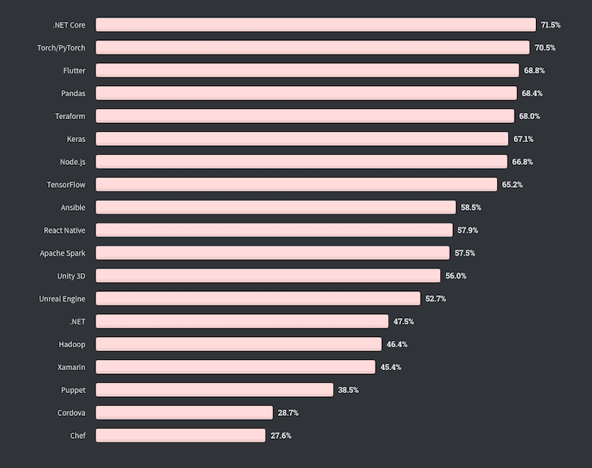

(Sponsors) Get started learning Python with DataCamp's free Intro to Python tutorial. Learn Data Science by completing interactive coding challenges and watching videos by expert instructors. Start Now!
# Comparing Python and Node.Js: Which Is Best for Your Project?
Updated on Dec 07, 2020
Choosing the right technology is a gruesome decision to make for your project's success. But before making an informed decision, it is vital you weigh your pros and cons smartly on all parameters. After all each project is unique and has its own customized demands and requirements. This article shares the most crucial factors to compare Node.js vs. Python to decide which is best for your project.
Before addressing the comparison between the two technologies, let's understand the basics of both technologies. Firstly Node.js is a runtime environment, whereas Python is a Javascript programming language. Both Node.js and Python are utilized for both back-end and front-end. Want to know more? Let's discuss more detailed parameters that influence directly on the web development phase of your project.
#1. Extensibility #
Node.js can customize and extend for rapidly growing enterprises organically. It makes data correspondence very easy between web servers and client-servers by leveraging built-in API for developing HTTP, JSON and DNS servers. It can be easily customized, integrated with numerous tools.
Whether your business has seen a sudden sharp rise in users or you have set your eyes on expanding other dimensions, Node.js is reliable to offer extensibility with astonishing outcomes. It can be integrated with Babel, facilitating front-end development with the browser or old versions of Node. Furthermore, it offers extensibility with frameworks such as Express, Meteor, Hapi, Koa, Nest, Restify, Fastify, and others.
Over the years, many Python frameworks and development tools have been created. A majority of Python developers also prefer to integrate it with Sublime, a well-known code Text editor. It gives some additional syntax extensions with editing features. There is also a test automation framework named Robot Framework, which is in progress. So a few strong web development frameworks like Pyramid, Django, Web2Py, Flask, or CherryPy.Python and Node.JS are both extensible efficiently.
Python can be conveniently extended along with several frameworks for full-stack and web-only development. Another key feature with Python implementation of Java called Jython simplifies scripting and enables speedy application development with ease.
#2. Use cases #
The event-driven, non-blocking I/O model of Node.js makes it an excellent ingredient for web applications wherever concurrent calls need real-time responses, including frequent data transmission from the server and client. Node.js is popularly utilized for real-time solutions such as:
- Chat applications
- IoT implementations
- Data streaming platforms
- Complex single-page apps
- Collaboration systems
However, Node.js is not recommended by experts for any CPU extensiveweb app development. Arguably many web development companies don't recommend using this JavaScript runtime environment for projects with heavy server-side processing due to its imperfect tools, buggy npm modules, and libraries. It'll be only wise to choose the right software development partner to assist you each step of your way to building extraordinary tech solutions for your enterprise.
Python is appropriate for both medium and large scale projects. Today the majority of tools rely upon Python for the data science industry. Python is suitable for a broad arena of projects ranging from web applications, statistical computations to machine learning and network programming. It's an excellent programming language for executing diverse tasks. Python is used for several domains like:

- Machine Learning
- Web Development
- Image Processing
- Educational Purpose
- Voice and Facial Recognition
- Software Testing
- Data Visualization
- Neural Networks
#3. Community: #
The Node.js vibrant community is nothing short of astonishing itself with its enthusiastic crowd, always eager to help you and full of trusted developers. This passionate community is supported by many leading tech titans such as Amazon, Google, Facebook, and Netflix.
The Node.js community is enormous and powerful. It is a mature, open-sourced language and now earned its spotlight amongst the user community. Over the years, millions of developers from all over the world have evolved to embrace and love this technology. As a business owner, it's easy to find the right tech partners and Node.js developers while as a developer, you can look forward to peer support.
In the Node.js community, you can expect unlimited support from development experts worldwide to solve even the most uncommon development dilemmas. Many tech giants tech experts have taken up the baton and made notable contributions in offering solutions and supporting peers. Developers globally prefer using this technology as the community is just the perfect platform to showcase your talent by contributing to Node.js and its various packages, and also end up with better career opportunities.
Python is an open-source and interestingly quite mature and older technology than Node.js. It is only natural that both large user communities have a large number of active contributors with diverse levels of experience.
Sequentially, you profit from the extensive community, whether a business owner or you are a developer. When finding support and valuable resources, Python also has a helpful community. Discussion boards and forums offer an excellent spot to post your queries and gain advice from fellow Python developers, opening new collaboration opportunities. For companies, it's an ideal place to engage with the top Python developers.
#4. Learning Curve #
Node.js is undoubtedly one of the most famous and extensively used programming languages in the developer's community. It is indeed recommended as easier to adapt and learn Node.js for web application development. Amongst developers, it seems like it's a universal programming language. It requires lesser effort and time, even for a junior developer, to learn and work with Node.js. According to a StackOverflow survey, 66.8% of the professional developers opted for Node.js as the most preferred technology.

Source: Stackflow 2020 Survey
Which is why exactly Node.js is so beloved amongst developers. Installing Node.js is simple, not really very complex to grasp the basics and eventually advance to the next level. Initially, it may be challenging to follow its event-driven architecture. Event-driven architecture has a significant impact on app performance; gradually, the developers master it with time and practice.
Learning Python is simple as it mostly teaches you to follow through the indented code in an organized structure with whitespace. It is quite whitespace sensitive. Developers often feel it's tricky to manage the indentation as a single indentation error, or even a missed bracket can ruin the code flow for no apparent reason. It is quite complicated while troubleshooting these issues, not to forget it is also a time-consuming task. It is a little more challenging to install Python than Node.js, especially with macOS.

Source: Stackflow 2020 Survey
It is relatively less demanding with Windows or Linux. But with macOS, you are limited with interference with some system libraries when using Python 2.0. Make sure you configure the right version for the development environment. Writing code in Python might take fewer code lines, unlike Node.js. But this is not generally the case as it will uniquely depend on your project requirements.
Honestly, it's tricky to measure up and conclude objectively, which is better as both Python and Node.js are simple and easy to learn. Maybe it all boils down to the project-specific requirements and customization you intend to offer to develop that particular project.
#5. Libraries #
In Node.js, NPM – the Node Package Manager plays a significant role. NPM is a very suffocated and indeed the world's largest software registry. It handles the packages and libraries for Node.js. NPM is gradually evolving with the most well documented and swift for working with. It is easy to work with and full of ready-to-use codes, libraries, and packages. Over 1.3 million a staggering number of packages, extensive libraries, and a large pool of modules are readily available with a simple search.
Python, similarly to Node.js, has PIP "Pip installs Python" that manages packages and libraries. Pip is straightforward to use, reliable, and quick for the developers to learn and operate it. Python by pip is the default package installer for packages and libraries. Over 220 thousand packages across a broad spectrum and varied categories for data science, image processing, complex calculation, and much more serve your needs.
#6. Error Handling #
Node.JS is very meticulous and efficient in error management. The tech has a reliable command in identifying exceptions occurring unpredictably at the time of code execution. The transparency and feasibility are very robust in terms of a programming tool in Node.js. Node.js has outstanding error management and has an excellent command to spot bugs and errors, reducing the chances of errors for the foreseeable future.
Python is equally powerful as Node.js when it comes to troubleshooting of sufficient errors and bugs. In Node.js vs. Python results for measuring error handling many debates, Python has the upper hand as it takes less time to spot errors and bugs in Python than Node.js. So for error management, developers won't endure challenges in case project selection is Node.JS instead of Python for web app development. Moreover, it also exterminates the entire completion time and creates more feasibilities of time-to-market readiness in a single attempt.
#7. Performance #
With a super powerful V8 engine, Node.js increases performance vastly, making it lightning fast to interpret Javascript to machine language. Node.js reduces app loading time exponentially. Its feature of non-blocking event-driven architecture allows multiple concurrent requests to be processed quick and swift. The critical factor here for performance is the speed of your web application response.
In comparison to Python, Node.js definitely performs optimally in all memory-sensitive and performance-driven web applications. Node.js exceptional performance is mainly due to its ability to process code super fast for real-time applications. This performance factor dramatically influences the overall app user experience, likeability, and time-to-market as well.
We all are aware that the faster the app loads, the better the app's performance gets. Python is relatively slower in real-time app performance due to its ability to process a single thread at one time. When it comes to multiple complex calculations, you might want to consider Node.js as a better option for speed and performance.
Simply put, in many use cases, you would not require performance to be your decisive parameter, such as if you are not developing a real-time app, so it would not directly influence user experience. Node.js web applications are much faster rather than python apps. It is a single stream programming language that prepares demands more gradually. Performance is the speed at which your web app replies, and this depends on how quickly your code collects and performs.
#8. Syntax #
The syntax is an individual decision. You will encounter bunches of doubt and analysis on the off chance that you spot the better or more terrible one. The syntax for Node.js is very similar to the browser's syntax for Javascript. Of course, according to the personal preference of the developer, it is aligned. We know a lot of our developers have faced our share of scepticism and criticism from our projects and readers as well. Truth be told, Node.js code structure is similar to JavaScript, making it familiar with the hurdles you might face with Node.js.
Then again, for Python, syntax is a significant portion as programming engineers as you don't have to create large code lines. Python's syntax is relatively considerate and simple. With Python, developers need fewer lines of code in comparison to coding in Node.js. Python's syntax structure is remarkably straightforward, even with its freedom to use curly brackets.
#9. Scalability #
Node.js offers scalability organically as a default part of its runtime environment with the ability to handle the full power of your device with a cluster module to its advantage. Node.js spares you the wrath of creating a sizable monolithic core. The tech naturally allows you to scale the web application horizontally and vertically, making it preferred by many developers. Node.js readily offers scalability in an app's ability to serve a large number of users with error-free performance. Using the Node.js framework becomes seamless with total assurance for scalability. It offers that extra ease to create a set of microservices and modules, making the development process very flexible.
Python is rather satisfactory. Python, on the other hand, is typically different from a reference to asynchronous programming. It lacks proper scalability to support runtime interpretation, making it a slower programming language. Python and Node.js both have very different ways to achieve scalability. Well, suitable for big services such as Reddit, Youtube, Pinterest, Dropbox, or even Quora.
#10. Architecture #
When it comes to Node.js architecture, it is organically designed as an event-driven runtime environment, which is paired with the asynchronous I/O. Due to its non-blocking nature from Node.js, it enables multiple concurrent connections without context switching. Node.js event-driven process is perfectly suitable for web app development for a real-time chat app, online games, data streaming platforms, and much more. Node.js architecture is a very sophisticated and highly preferred technology framework to build innovative web apps. Unlike the traditional web-serving technique where every request creates a new thread crapping the system in Node.js, it operates on a single thread.
On the other hand, Python architecture is designed differently than Node.js. Python consists of a mix of tools that enables python developers to build an asynchronous and event-driven app. Few modules and libraries like 'asyncio' help in writing the specific code for Python. Python doesn't come with the built-in support libraries; it requires additional special tools. However, in Node.js, it is a part of the default libraries in-built at the installation time, which requires extra time to code with the module.
Concluding Remarks #
When choosing the technology based on your project's precise requirements, it is inevitable to consider all vital parameters. Python and Node.js both are amazing at their own place and have a variety of use cases. Hope this article addresses all those essential factors in comparing Python and Node.js; you might need to make the right decision according to your project demands.
Author Bio: Hardik Shah works as a Tech Consultant at Simform, a leading software development company. He leads large scale mobility programs covering platforms, solutions, governance, standardization, and best practices.
Other Tutorials (Sponsors)
This site generously supported by DataCamp. DataCamp offers online interactive Python Tutorials for Data Science. Join over a million other learners and get started learning Python for data science today!

View Comments